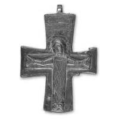
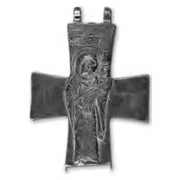

Catalog › CE-0472 · SYR2012-49
Encolpion bivalv de aliaj de cupru, cat. 49, NMIU Kiev
sec. X–XI (901–1100) · loc necunoscut · Muzeul Național de Istorie a Ucrainei (НМИУ), Kiev; colecția „siriană” B. I. și V. N. Hanenko, inv. valva anterioară: в 4626/237 (4201); valva posterioară: в 4626/239 (4203)
double-sided reliquary cross (enkolpion), altul; c. X–XI (901–1100); find spot unknown; kept at Muzeul Național de Istorie a Ucrainei (НМИУ), Kiev; colecția „siriană” B. I. și V. N. Hanenko.




Identificare
- Categorie
- Encolpion bivalv (relicvar)
- Material
- Altul
- Tehnică
- Turnare în relief; Gravare (incizie)
- Dimensiuni
- Î 74 × L 58 × Gr 11 mm
Iconografie
- Avers
- Răstignirea (Hristos în colobium)
- Descriere avers
- Răstignirea ocupă întreg câmpul valvei. Hristos, pe fundalul lemnului crucii, în colobium lung, cu capul înclinat spre umărul drept, cu nimb crucifer; brațele ușor îndoite la coate, tălpile depărtate în lături și țintuite. Deasupra capului, inscripția IC XC. În relief sunt date doar figura lui Hristos și brațul transversal al crucii, încadrat suplimentar printr-o linie adâncită. Nimbul lui Hristos, tăblița, soarele și luna de deasupra, ca și inscripțiile, sunt redate prin adâncituri punctiforme și linii drepte; la fel sunt decorate colobiul și marginile valvei.
- Revers
- Maica Domnului cu Pruncul
- Descriere revers
- Maica Domnului Hodighitria cu Pruncul pe brațul stâng, în relief, ocupând aproape tot planul vertical al valvei, puțin depășind-o (un fragment din nimbul lui Hristos nu încape). Maica Domnului, ușor întoarsă, cu capul înclinat spre Prunc, care stă pe jumătate culcat pe brațul ei. Pe capătul de sus, inscripții. Reliefurile sunt completate cu dalta: nimburile lui Hristos și ale Maicii Domnului sunt conturate cu o linie adâncită, veșmintele decorate cu ornament vegetal și geometric.
- Inscripții
- Față: IC XC; revers: IC, MHP ΘV (sub titIuri)
- Limba
- Greacă
Datare și atribuire
- Datare
- sec. X–XI (901–1100)
- Centru
- Constantinopol
- Tipologie
- cruce-relicvar în relief, iconografie prescurtată (fără preaslăvitori, fără suport, fără inscripția evanghelică); revers fără analogii apropiate
Descoperire
- Context
- Colecție (fără context)
- Coordonate
- 50.4536° N, 30.5164° E
- Precizia locului
- Loc de păstrare (loc de descoperire incert)
Păstrare și referințe
- Colecție
- Muzeul Național de Istorie a Ucrainei (НМИУ), Kiev; colecția „siriană” B. I. și V. N. Hanenko
- Nr. inventar
- valva anterioară: в 4626/237 (4201); valva posterioară: в 4626/239 (4203)
- Bibliografie
- A. A. Пескова, Л. В. Строкова, Христианские древности Византии в «Сирийской коллекции» Б. И. и В. Н. Ханенко, Sankt-Petersburg–Kiev, 2012, 225 p. [Peskova, Strokova 2012], p. 138, cat. nr. 49, ilustrația (fotografie și desen) de la p. 138. Publicată și în: N. P. Kondakov, 1915, p. 166, fig. 75; A. A. Peskova, 2002, p. 257–259, fig. 4: 2; A. A. Peskova, 2006, p. 134–139, fig. 11.
- Figura
- ilustrația la cat. nr. 49
- Planșe
- Peskova, Strokova 2012, p. 138
- Observații
- Cruce-relicvar cu brațe drepte ușor evazate; lăcașurile valvelor adânci, cu suprafață netedă și muchii clare. Pe valva anterioară lipsește urechea de jos (urma lustruită), rebordurile capătului de jos și ale unui braț lateral sunt deteriorate; pe valva posterioară, marginea de jos lipsește complet. Grosimea valvei anterioare 0,7–1,1 cm, a celei posterioare 0,6–1,1 cm. Dimensiuni în sursă (în paranteză, înălțimea cu urechile): 7,4 (8,3)×5,85 cm; 7,7 (8,5)×5,85 cm; grosime 0,7–1,1 cm; 0,6–1,1 cm. Vechiul număr de inventar al Muzeului de Artă Hanenko (1925) este cel din paranteză. Album Hanenko, vol. III (needitat): valva anterioară tabla XXXVII, nr. 365; valva posterioară tabla XXXVII, nr. 366. Atribuirea autoarelor: Constantinopol, sec. X–XI. Locul descoperirii nu este dat în sursă. Material în sursă: aliaj de cupru. Locul descoperirii nu e cunoscut cu precizie; punctul de pe hartă marchează locul de păstrare (Muzeul Național de Istorie a Ucrainei), nu locul descoperirii. Coordonate: nu sunt date în sursă.
Citare: Corpus Encolpiorum, CE-0472, Encolpion bivalv de aliaj de cupru, cat. 49, NMIU Kiev, --root/piese/SYR2012-49/ (accesat 2026-10-20).